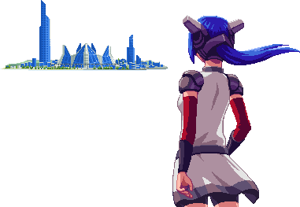

bonk
hi i'm vi and this is my hand
hi
My name is Vi and I'm a 21 year old biohacker
I'm a computer science and ITAM major at CWU, and I've worked for a WSU branch as a web designer since I was 19. I do a lot of small tinkering projects so people
sometimes mistake me for an engineering student. Most of my history revolves around software but I still love to mess with an Arduino now and again to come up with
something fun.
We're a group of people that "hack" our bodies through self experimentation. My experiments revolve around improving the human body through artificial input and output. The self experiment I'm currently participating in uses electrodes in my hand to stimulate the nerves over a period of time. At the end of the experiment, we are seeing if it causes any changes in the muscle and nerve sensitivity in that area. The objective of this experiment is to understand whether or not it's safe for prolonged periods of time. If it is, I'm going to see if it would be viable for strengthening certain muscles in people with missing limbs to help make more responsive robotic prosthetics.

why i do the things that i do
It's a coping mechanism for being insane.
Jokes aside the worst parts of my life were always the parts when I didn't have any projects going.
I promised myself I would get better after some mistakes I made in 2021, and the turning point was finally starting
a pair of headphones I always wanted to make. I don't believe in New Years resolutions but 2022 was the
exception and so far things have been much better.
the headphones
My current main project is a pair of modular headphones that sync to the users heartrate. The headphones have two fans that spin to the rhythm of the heart, and blink red when the user has an arrythmia attack. Honestly the antenna are mainly there because they look cool, but they are functional and play FM radio.

the future
convert brain to data and upload myself to the internet or something
more on me
- I grew up with games being a central part of my life. I always carry a controller, just in case someone is playing Smash.
- I worked on a game called CrossCode in high school.
- i made my first website when i was 12 and started programming when i was 14 with ruby
- i also got my first MTA certification when i was 17
- my brother graduated from CWU with a CS degree and im following in his foosteps. unfortunately im way cooler so sucks for him
- i have a motorcycle license


what i live by
I appreciate comedic relief. Which is why I live my life reveling in demolishing people's expectations vaguely based on my appearance. I have heard everything.
I used to feel the need to be constantly proving myself, but these days I've given up caring because in the end if you underestimate me you're only making a fool of yourself, not me. I have nothing to prove. I'm a nutcase who injected a microchip into herself. Questioning my dedication is a mistake.